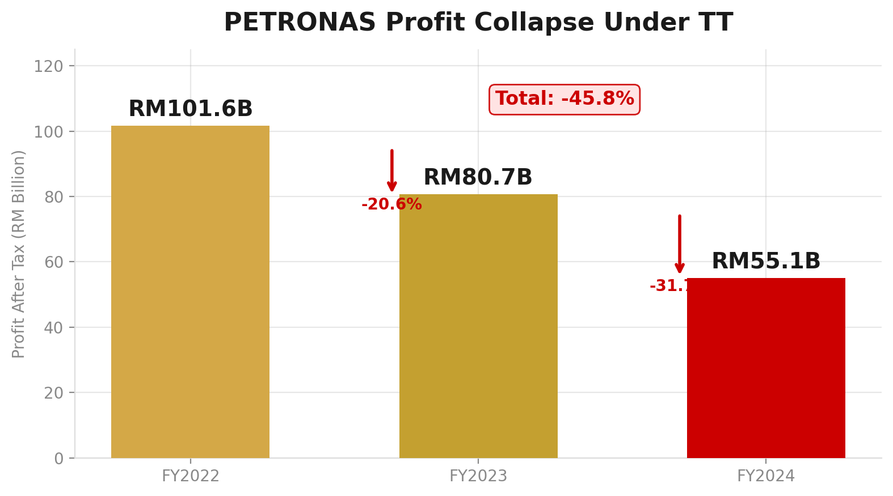
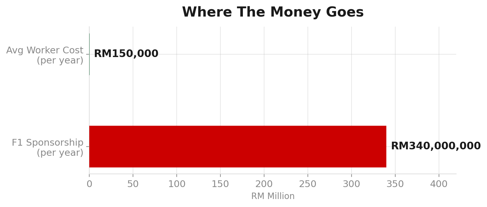
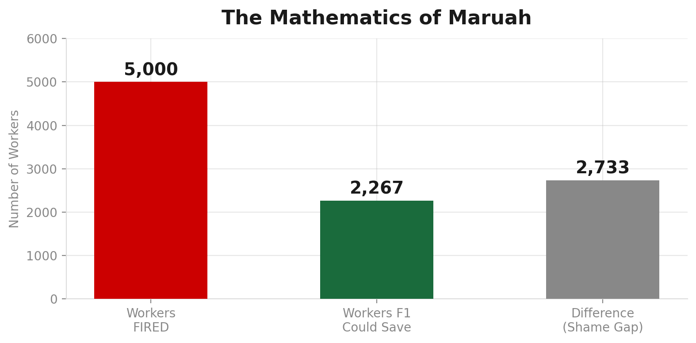

Ini dokumen untuk orang Penang, orang Sarawak, orang Terengganu, orang Sabah, orang KL, orang kampung, engineer, technician, driver, clerk, budak grad — semua rakyat Malaysia yang dari kecil dengar satu nama dengan dada yang kembang: PETRONAS.
Dulu, nama PETRONAS bunyi macam maruah negara. Bila orang tua-tua sebut, depa tak sebut sekadar syarikat. Depa sebut lambang kebolehan Malaysia berdiri atas kaki sendiri. Minyak kita. Gas kita. Kepakaran kita. Bila PETRONAS masuk luar negara, rakyat rasa negara kecil ni ada tulang belakang.
Hari ini, rasa itu makin reput.
Bila 5,000 pekerja dibuang atas nama "rightsizing," bila syarikat British dapat aset sehingga AS$833 juta, bila Eni dari Itali masuk usaha sama bernilai AS$15 bilion, bila Sarawak diseret ke mahkamah oleh syarikat milik negara sendiri — rakyat ada hak untuk tanya satu soalan mudah: ini semua kerja siapa sebenarnya?
Tiga lapis kuasa. Tiga bentuk kegagalan. Satu corak: diam bila patut bersuara, senyap bila patut bertindak, tanda tangan bila patut tanya soalan.
Tengku Taufik — orang yang pegang stereng. Bakke Salleh — orang yang sepatutnya jadi pengimbang. Anwar Ibrahim — ketua kerajaan yang memiliki PETRONAS.
Tiga-tiga diam. Tiga-tiga tanda tangan. Tiga-tiga tak jawab.
Di bawah Tengku Taufik, PETRONAS mengalami kemerosotan kewangan paling teruk dalam sejarah modennya. Bukan sebab pasaran semata — tapi sebab keputusan.

5,000 pekerja kena "rightsizing." Tapi F1 Mercedes — RM340 juta setahun — tak sentuh.

Setiap tahun, cukup untuk selamatkan 2,267 pekerjaan. Tapi mereka pilih kereta laju.

Januari 2026: PETRONAS fail motion di Federal Court. Februari 2026: Sarawak balas saman.
Syarikat milik negara menyaman negeri yang menyumbang hasil petroleum. Ini bukan pertikaian teknikal. Ini kegagalan federalisme.
Di bawah Tengku Taufik, PETRONAS menguruskan satu hierarki tidak bertulis: siapa dapat aset, siapa dapat saman.
Ni bukan teori konspirasi. Ni pattern yang boleh diukur dalam kontrak yang ditandatangani, award yang diberikan, dan saman yang difailkan.
Bakke Salleh pernah jadi Pengerusi 1MDB. Dia letak jawatan sebab tak puas hati dengan pengurusan dan transaksi mencurigakan — termasuk aliran AS$700 juta ke Good Star.
Fakta tu penting: dia tahu bila perlu bangun.
Sekarang, sebagai Pengerusi PETRONAS sejak 2018, dia diam. Enam tahun. Rightsizing, lawan Sarawak, jual aset pada British — semua tanda tangan dia.
Anwar. Kau orang Penang. Sama macam aku. Kita tau apa dia sembahyang Jumaat, lepak kedai kopi, dengar cerita orang tua pasal PETRONAS.
Orang Penang bangga dengan PETRONAS dulu. Bila PETRONAS beli saham di Iraq, di Sudan — kami rasa besar. Bangsa kecik, syarikat dunia.
Tapi sekarang? Kau diam.
Januari 2025 kau cakap isu Sarawak "selesai di peringkat korporat." Januari 2026 PETRONAS fail motion mahkamah. Mana selesainya?
TT pernah jadi Executive Assistant kepada Tun Azizan Zainul Abidin — CEO PETRONAS 1988–1995, Pengerusi 1995–2004. Dia kerja rapat. Dia tau apa Azizan ajar.
Dalam buku The Quintessential Man, orang gambarkan Azizan:
Azizan pernah kata: "The day we compromise on integrity will be the day we see Petronas destroyed."
TT, kau buktikan betul. Sebab hari ni, bawah kau:
Kau engineer. Kau operator. Kau admin. Kau finance. Kau yang kena rightsizing. Kau yang tengok kawan kena buang.
Aku tau kau baca ni. Senyap-senyap. Dalam phone. Lepas lunch. Lepas meeting.
1. Jangan lupa.
Simpan nama. Simpan tarikh. Simpan memo. Suatu hari nanti, sejarah nak tau apa jadi. Bila masa tu tiba, kau ada jawapan.
2. Jangan takut.
Diorang boleh buang kau. Tapi diorang tak boleh buang maruah kau. Kau engineer. Kau operator. Turun padang. Pegang pipe. Pegang valve. Diorang duduk dalam bilik berhawa dingin, tekan keyboard, sign surat. Kau yang buat PETRONAS hidup.
3. Jangan diam.
Cerita dekat bini kau. Cerita dekat anak kau. Supaya esok, bila orang tanya "masa tu kau kerja kat PETRONAS, apa jadi?" — kau ada cerita.
4. Ingat satu nombor: F1 RM340 juta setahun.
Setiap kali diorang cakap "kita kena rightsizing untuk terus hidup," kau ingat nombor tu. Kau engineer. Kau tau bezakan "perlu" dengan "nak." F1 ni depa nak. Bukan perlu.
Dokumen marah tanpa tuntutan mati sebagai luahan. Dokumen marah dengan tuntutan jadi tekanan demokratik.
1. Penjelasan terbuka tentang rightsizing.
Kenapa 5,000 pekerja? Apakah pengorbanan setara yang dibuat oleh kepimpinan tertinggi?
2. Penjelasan tentang Sarawak.
Kenapa pertikaian dibiarkan sampai ke Federal Court? Apa langkah nyata untuk selesaikan secara persefahaman?
3. Peranan lembaga.
Apakah syarat sebenar yang digunakan untuk menilai dan menyambung kontrak CEO? Berapa kali lembaga menolak usul pengurusan?
4. Komitmen akauntabiliti moral.
PETRONAS tidak akan masuk ke budaya normalisasi keputusan besar tanpa akauntabiliti.
Institusi negara tidak rosak hanya kerana pasaran, undang-undang, atau tekanan global. Institusi negara rosak bila manusia yang diberi amanah memilih bahasa yang cantik lebih daripada tindakan yang benar.
TT tidak boleh cuci semuanya dengan slogan amanah.
Bakke tidak boleh cuci semuanya dengan reputasi lama atau diam beradab.
PMX tidak boleh cuci semuanya dengan kenyataan — kalau realiti masih luka.
Rakyat Malaysia masih kenal satu benda
yang lebih tua daripada governance deck
dan lebih keras daripada press release:
malu.
Bila sebuah institusi sebesar PETRONAS mula kehilangan rasa malu, rakyat mesti jadi cermin yang paksa ia melihat muka sendiri.
Bukan sebab benci. Sebab sayang. Sebab institusi yang dibina dengan amanah generasi lama tak patut diserah bulat-bulat kepada generasi baru yang pandai bercakap tetapi takut membayar harga moral kuasa.
Author: Muhammad Arif bin Fazil | Date: 14 June 2026 | Classification: Public Interest
PETRONAS, Malaysia's national oil company (fully state-owned), is undergoing its most severe governance crisis in decades — not from market forces, but from the decisions of three men.
Layer 1 (External): Monopoly defense against Sarawak — litigation instead of partnership. SARAWAK sovereignty score: 1.0 (constitutionally valid claim).
Layer 2 (Internal): Worker sacrifice with elite protection — 5,000 jobs cut, RM340M F1 preserved. The math: 1 F1 = 2,267 worker salaries.
Layer 3 (Deepest): Implicit hierarchy of worth — Western/federal entities receive assets and awards; Sarawak receives court summons and "awaiting clarity."
This dossier is a 13-page human-language document with verified citations. Charts and data are reproducible. The full BM text, infographic, and English brief are available as a PDF package.
The structural parallel to 1MDB: not identical mechanism, but identical pattern — a national institution losing integrity while those at the top deploy governance language to mask the decay.